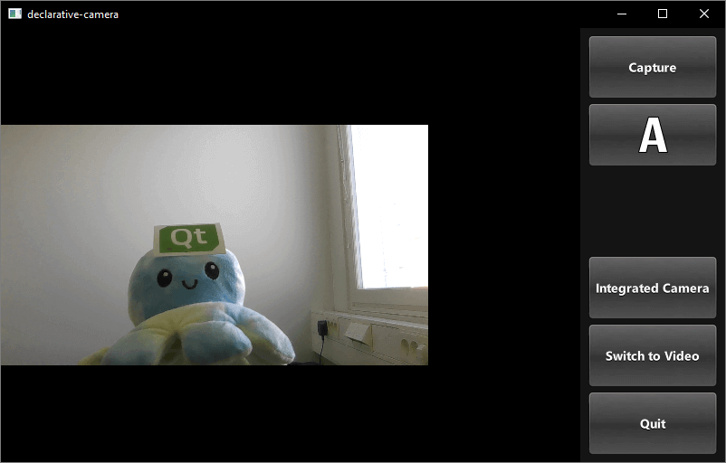
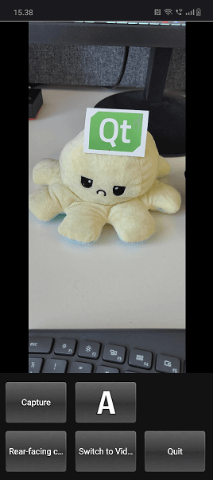
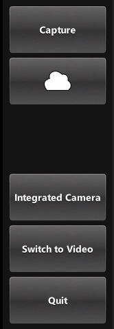
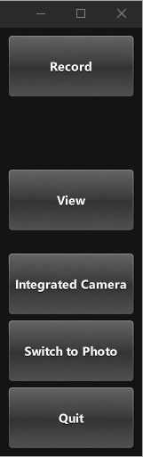
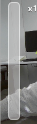
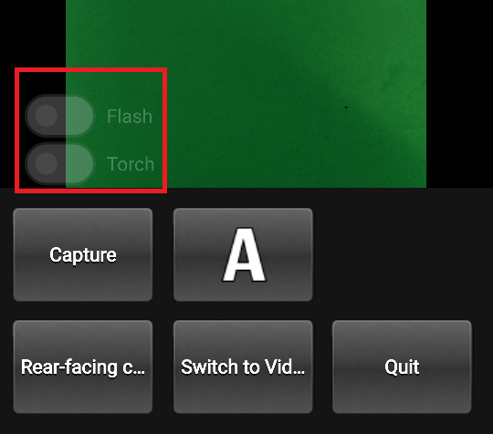

QML Camera Application
This Qt Quick based application shows how to use the API to capture a still image or video.

This example demonstrates how to access camera functions via QML. It shows how to change settings and capture images or video.
Running the Example
To run the example from Qt Creator, open the Welcome mode and select the example from Examples. For more information, visit Building and Running an Example.
Application structure
Most of the QML code in this example supports the user interface. Custom types that support the requirements have been implemented using existing Qt Quick controls.
Using screen orientation to select layout
The orientation and control layout state logic is encapsulated in a separate Item, controlLayout like so:
Item {
id: controlLayout
readonly property bool isMobile: Qt.platform.os === "android" || Qt.platform.os === "ios"
readonly property bool isLandscape: Screen.desktopAvailableWidth >= Screen.desktopAvailableHeight
property int buttonsWidth: state === "MobilePortrait" ? Screen.desktopAvailableWidth / 3.4 : 114
states: [
State {
name: "MobileLandscape"
when: controlLayout.isMobile && controlLayout.isLandscape
},
State {
name: "MobilePortrait"
when: controlLayout.isMobile && !controlLayout.isLandscape
},
State {
name: "Other"
when: !controlLayout.isMobile
}
]
onStateChanged: {
console.log("State: " + controlLayout.state)
}
}
The stillControls and videoControls objects both bind to the state and buttonsWidth properties of this Item, as shown in stillControls:
PhotoCaptureControls {
id: stillControls
state: controlLayout.state
anchors.fill: parent
buttonsWidth: controlLayout.buttonsWidth
buttonsPanelPortraitHeight: cameraUI.buttonsPanelPortraitHeight
buttonsPanelWidth: cameraUI.buttonsPanelLandscapeWidth
captureSession: captureSession
visible: (cameraUI.state === "PhotoCapture")
onPreviewSelected: cameraUI.state = "PhotoPreview"
onVideoModeSelected: cameraUI.state = "VideoCapture"
previewAvailable: imageCapture.preview.length !== 0
}
To support debugging, a message about layout state change is logged.
Here is the portrait layout:

You can see the state property is initially set as PhotoCapture.
Then the states themselves are defined like so:
states: [
State {
name: "PhotoCapture"
StateChangeScript {
script: {
camera.start()
}
}
},
State {
name: "PhotoPreview"
},
State {
name: "VideoCapture"
StateChangeScript {
script: {
camera.start()
}
}
},
State {
name: "VideoPreview"
StateChangeScript {
script: {
camera.stop()
}
}
}
]
Controls for capturing
Controls for capturing are implemented in PhotoCaptureControls.qml and VideoCaptureControls.qml. They each are based on a FocusScope that defines common buttons dimensions and margins that are used by the control buttons and then declares the buttons.
This generates a column on the right hand side of the screen which includes, listed top to bottom, the following controls:
- A
CaptureorRecordbutton, which initiates capturing. - A
capture propertiesbutton that displays the icon of the current white balance mode selected and when pressed uses a pop-up to displays the following option's icons:- Flash mode (if available)
- White balance modes
- Exposure compensation
- A
Viewbutton, once something has been captured. - A button which displays the currently selected capture device and when pressed provides a list of available devices to switch to, using a pop-up.
- A
Switch Tobutton that displays the alternate capture mode (video or photo) depending on the current active selection and switches the mode when pressed. - A
Quitbutton, that exits the application.


Image capturing
The button that triggers this is defined in CameraButton.qml: but its interaction with the camera is in the controls types, lets look at PhotoCaptureControls:
CameraButton {
text: "Capture"
implicitWidth: captureControls.buttonsWidth
visible: captureControls.captureSession.imageCapture.readyForCapture
onClicked: captureControls.captureSession.imageCapture.captureToFile("")
}
Zoom control
Implemented in ZoomControl.qml the ZoomControl type is based on an Item and creates a bar that represents the zoom level, which can also be dragged. It uses an exponential calculation method to determine the zoom factor given the position of the grove.
The bar is only visible if the initialZoom is greater than 1. This means the currently active camera has a zoom function.

Item { id : zoomControl property real currentZoom : 1 property real maximumZoom : 1 signal zoomTo(real target) visible: zoomControl.maximumZoom > 1 MouseArea { id : mouseArea anchors.fill: parent property real initialZoom : 0 property real initialPos : 0 onPressed: { initialPos = mouseY initialZoom = zoomControl.currentZoom } onPositionChanged: { if (pressed) { var target = initialZoom * Math.pow(5, (initialPos-mouseY)/zoomControl.height); target = Math.max(1, Math.min(target, zoomControl.maximumZoom)) zoomControl.zoomTo(target) } } } Item { id : bar x : 16 y : parent.height/4 width : 24 height : parent.height/2 Rectangle { anchors.fill: parent smooth: true radius: 8 border.color: "white" border.width: 2 color: "black" opacity: 0.3 } Rectangle { id: groove x : 0 y : parent.height * (1.0 - (zoomControl.currentZoom-1.0) / (zoomControl.maximumZoom-1.0)) width: parent.width height: parent.height - y smooth: true radius: 8 color: "white" opacity: 0.5 } Text { id: zoomText anchors { left: bar.right; leftMargin: 16 } y: Math.min(parent.height - height, Math.max(0, groove.y - height / 2)) text: "x" + Math.round(zoomControl.currentZoom * 100) / 100 font.bold: true color: "white" style: Text.Raised; styleColor: "black" opacity: 0.85 font.pixelSize: 18
In PhotoCaptureControls.qml and VideoCaptureControls.qml the signal zoomTo will set the selected camera's zoomFactor property to the calculated target value, as well as updating the ZoomControl bar.
ZoomControl {
x : 0
y : captureControls.state === "MobilePortrait" ? -buttonPaneShadow.height : 0
width : 100
height: parent.height
currentZoom: captureControls.captureSession.camera.zoomFactor
maximumZoom: captureControls.captureSession.camera.maximumZoomFactor
onZoomTo: (target) => captureControls.captureSession.camera.zoomFactor = target
}
Flash and torch control

Defined in FlashControl.qml this enables flash mode selection and torch functionality to be toggled via a Switch. As with the zoom control, the switches are only visible on top of the preview window if the active device supports these functions.
Here we check if the functions are supported:
property Camera cameraDevice
property bool mIsFlashSupported: (cameraDevice && cameraDevice.active) ? cameraDevice.isFlashModeSupported(Camera.FlashOn) : false
property bool mIsTorchSupported: (cameraDevice && cameraDevice.active) ? cameraDevice.isTorchModeSupported(Camera.TorchOn) : false
Here we implement the flashModeControl switch, which also directly controls the Camera device.
Switch {
id: flashModeControl
visible: flashControl.mIsFlashSupported
opacity: checked ? 0.75 : 0.25
text: "Flash"
contentItem: Text {
text: flashModeControl.text
color: "white"
leftPadding: flashModeControl.indicator.width + flashModeControl.spacing
}
onPositionChanged: {
if (position) {
if (torchModeControl.checked)
torchModeControl.toggle();
flashControl.cameraDevice.flashMode = Camera.FlashOn
} else {
flashControl.cameraDevice.flashMode = Camera.FlashOff
}
}
}
Torch control is implemented in a similar way.